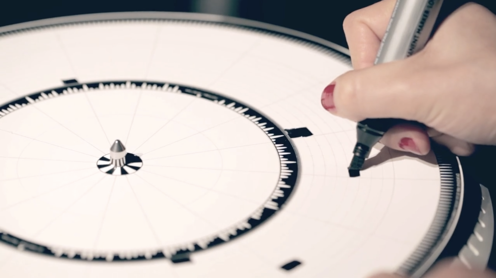

Introduction
I wanted to create a physical interactive record that would allow visitors to experience the record in its original playing mode in real life through specific interactions.
Concept and Background Research
Virtual reality in digital media is ubiquitous in our lives today. Take music, for example, with music players and music software now filling our entire lives. We are immersed in the convenience of digital life and are accustomed to searching and accessing information more quickly. Inspired by the article sense practicing, in which the author explores food beyond the boundaries of people's senses and tries to expand the existing ones, I wanted to create an interactive device that would allow people to feel the principles of music playing in the real world.
For Jesse Lucas' work "DYSKOGRAF" he used a paper "record" and made a record player out of felt. When one makes a random drawing on the paper record and places it on the record player, the record player generates a musical rhythm in response to the drawing and plays it in real-time. The whole process was very interesting to me. I then saw other works that explore how people can expand their perceptual boundaries and works such as "Rectable" and The Octopus Project's audio-visual works interactive works.
Technical Implementation
Jesse Lucas's work "DYSKOGRAF" is a replica of the composition of a real record player, in my case I wanted to show the rotation of the music being played, so I chose to use blender to model and 3d print a gear set in which each Each gear in the set can be taken apart and reassembled, giving the piece a more unstructured and random feel.
3.1.2 SoftwareMy whole project is based on the principle of pre-setting colors and giving these colors corresponding audio, when the webcam captures a color it returns some values to the computer and triggers the audio response. The software I used was max msp and the main function I used was jitter, I used four colors in total, which corresponded to four different audio effects.
3.2Technical difficultiesThere were a few difficulties throughout the implementation. The first is how to convert the colors captured by the camera into data that can be picked up by the computer and then converted into the corresponding sound effects. To do this I referred to the YouTube video Motion tracking on Ableton Live (controlling midi) by Gustavo Silveira - the tutorial locates the colors captured by the computer. Whenever a color is tracked, the corresponding value is given, and a scale tool is used to put the value within 127, so that all midi sounds can be used. Secondly, how to get a camera to trigger different sound effects when it traces different colors at the same time, I took the approach of copying the four original patches in their entirety and setting a different range of colour tracking values for each patch, which is very primitive but ensures that the switches between each patch do not affect each other. The final and most difficult problem was that each frame of the preset color captured by the camera was departing from the music play button, which caused the music to play a bit haphazardly. For this reason, I have given the trigger points a numerical range, which adds a degree of stability to the music playback.
Reflection and Future Development
The main tool I used in this project was max msp. The most difficult part of the project was the 'stability' of the code, but also the stability of the gear set on the base plate. A piece of work in the showroom has to have all the parts running smoothly and seamlessly. In the future, I'm also looking at "improving the overall stability of the project" as a major area of improvement, thinking of better ways to make it so that when the camera captures a color it only plays the corresponding sound once, rather than every frame. I also need to think of a better way of fixing the piece to the base plate. The materials I am using are magnets and iron plates, and the different forces used by the participants in rotating the gears make it easy to change the position of the magnets. But the beauty of this piece is that it is a visual and playful way of showing how color and sound interact and work together. My original intention was to allow people to experience the original principles of music playing in the physical world, to change and create the effects of music playing through their actions, to create their own unique musical loops. I hope that after watching this piece, the audience will be more fully aware that computers are tools that help us to feel the world more acutely, to be more interested in the details of life in the real world, and to discover and feel the beauty of the real world.
References
- http://kodh.is/dyskograf/
- https://www.youtube.com/watch?v=6t2MnoquWX4&list=PLuuhCdY5kEZ8Q6S3e0hDV9JYz8gn6x0el&index=20&t=802s
- https://www.youtube.com/watch?v=kKgHxlVDsoQ&t=331s
- https://var-mar.info/dream-painter/
- https://www.moogmusic.com/media/octopus-project-moog-etherwave
- https://www.artic.edu/artworks/239025/color-chaser
- https://www.kidrobot.com/blogs/news/drawing-apparatus-by-robert-howsare
- https://www.gustavosilveira.net/threedots
- Tucker, Amy Rebecca. "Chromidio: an interface for color tracking with key frames in Max and Nato." PhD diss., Texas A&M University, 2002.
- Eidelman, Elizaveta, and Serguei A. Mokhov. "Alchymical Mirror: Real-time Interactive Sound-and Simple Motion-Tracking Set of Jitter/Max/MSP Patches." arXiv preprint arXiv:1101.2219 (2011).